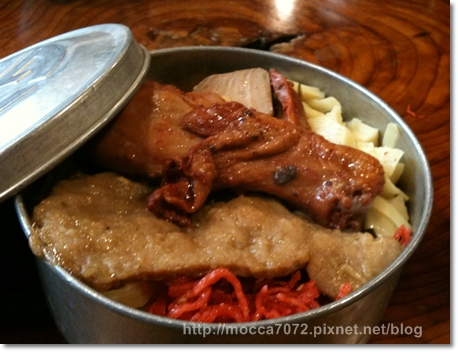
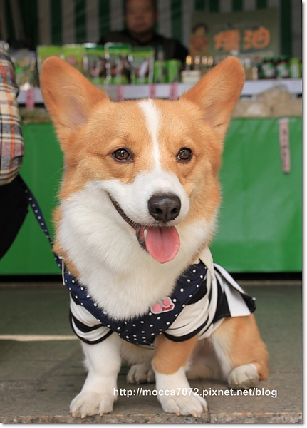
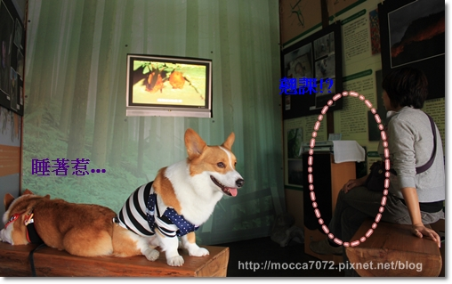
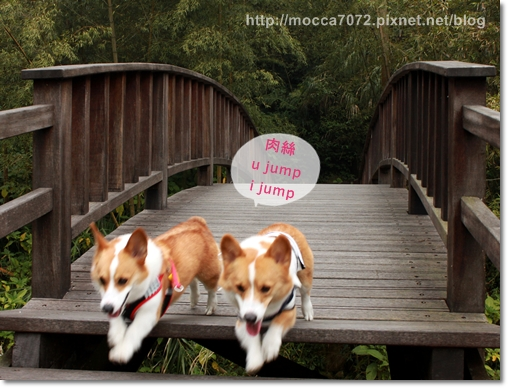
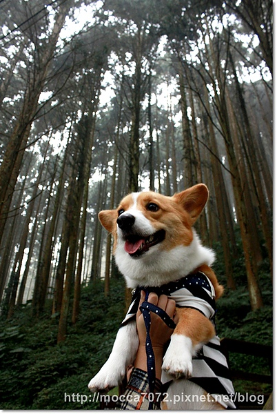
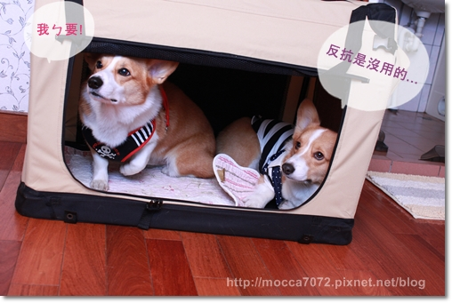
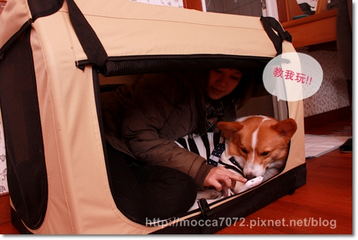

20110228，趁著三天連假！跟卡內家衝了阿里出三天二夜
(感謝伶老師放棄"翹幫王"的美名，陪我們連假人擠人！XD)
一大清早五點出發，摸黑出門對卡內家來說是家常便飯
我最愛鏡子反射合照！

第一站吳鳯廟稍作停留，一路上我們會互傳whats app
卡內拔突然丟了一個-->你們知道吳鳯吧?
咖王笑，誰不知啊！
馬上回傳-->吳缸的弟弟，吳三跪的兒子，吳宗憲的祖先
以上大誤！！哈哈哈 想知道吳鳯那位去咕狗看看吧！(點wiki)

牽手樹下相親相愛，下面那兩個矮子居然直接喇吉！？

猛哥自從去年在墾丁民宿玩bed jumpiing被我發揚光大後
現在出去就會被要求ㄉㄨㄞ一下 ，哈哈哈
想知道猛哥厲害的請點-->熱血墾丁 ● 賤狗兄來找碴+Bed Jumping
我自己也再回味了一遍，超好笑的！

放開小鬼們一起鼓噪！XD

中途停留了"天長地久"橋，是橫跨八掌溪兩座古樸吊橋。

通常前往阿里山的遊客部分會在這稍作休息，高處天長橋，低處地久橋

先苦後甘，抱摩肥爬到快往生了，上去發天長橋居然在維修。
（掯！下面也不貼個公告 害大家都白爬了.....）
害大家都白爬了.....）

"暗"聲連連後只好再扛著小王爺下樓，在地久橋拍個照就閃人啦！
因為旁邊有廟宇，會突然放個炮，嚇得卡ㄋㄟㄋㄟ都挫尿惹！

看到小7可愛的門市招牌，今天主要目的地-->奮起湖到嘍！
門口的"歐噴醬"是柯基版的呦！超矮超Ｑ！ 

抵達時間近中午，就直接到奮起湖大飯店吃鐵路便當填肚子！
在門口還遇到小7請來的代言人林金坤先生(飯店老闆)
是說本人跟照片長的一模一樣就是了！不難認出。哈哈哈

一個便當１００元，觀光景點咩！
味道吃起來跟"些們"的味道差不多 (廢話)，但來這兒吃是種Fu
而且不吃這個你也沒別的東西可以吃啦！XD

逛逛老街，老街小小一條，一下下就到底了！

奮起湖車站拍拍！

等麻麻買愛玉吃的卡嚕比，又被拍到這種大頭小身體的怪比例！哈哈

到文史館參觀，喝杯下午茶順便跟負責的阿姨聊聊天

熱心的阿姨播放了影片給我們看，不管有沒有長毛都要乖乖上課！

雖然只有短短十分鐘的影片，但現代屎小蛤真難教.....
播不到一分鐘就開始東張西望

時間過了五分鐘.......驚！
卡ㄋㄟ睡覺...卡卡魂飄走了....卡內麻翹課!? (眾:想賴給誰啊你~)

接著聽從阿姨的介紹，我們往杉林步道前進，吸取更多芬多精！
這步道非常好走，很適合小短短，就算有階梯也都是矮矮的不多

放開摩卡卡我就知道他會變"銷告"！哈哈哈
衝來衝去就算了，還不停的衝撞卡ㄋㄟ！！
雖然惹怒秘書長，但顯示卡卡真的猴嗨森啊！！！

有圖有真相！他一定要撞到卡內才爽快！哈哈哈

雙卡漫步悠遊

咦！殉情！？
雖然照片糊糊，但雙卡默契不是蓋的，timing抓的剛剛好，步伐整齊的咧！

有人也覺得，我們四個長好像.....ㄇ！？

穿越步道後的這區的杉林超直的，好美！！

一定要讓摩卡卡留念一下嘍！！
這幾天要舉起卡卡時，大家都會用念力喊：Kuma麻，上身！！！.gif")

不騙你，真的很有用！！這幾天都拷這句咒語了！？XD

清晨出發，一路玩上山，到達阿里山居然也不過快五點！！噗～
可見有多累了！哈哈哈
馬上到民宿Check in，這次住的民宿叫「新順利民宿」
四人房型不大，東西放一放也沒什麼地方可走路了，ㄎㄎㄎ
但它離車站很近，而且至少是間乾乾淨淨的民宿（不像那可怕的台中ｘ賽日租）

卡內家自備的寵物帳蓬，但宣布了一件事讓小狗子大為震驚！

就是老娘今晚要跟你們擠啦！！哇哈哈哈
幹嘛幹嘛～我也是寵物耶！我還入選過寵物之最吶！！（糗）
(痞克幫！踹共，你還欠我一個解釋！？ )
)

不虧是我兒子，隨遇而安，照睡不誤！
卡ㄋㄟ就生氣跑去跟他老北告狀了，哈哈哈

母子倆一起邊玩唉鳯邊培養睡眠情緒，晚安嘍！
第一天看起來沒幹嘛，但真的有累到～～～我們是奧少年啊！！
